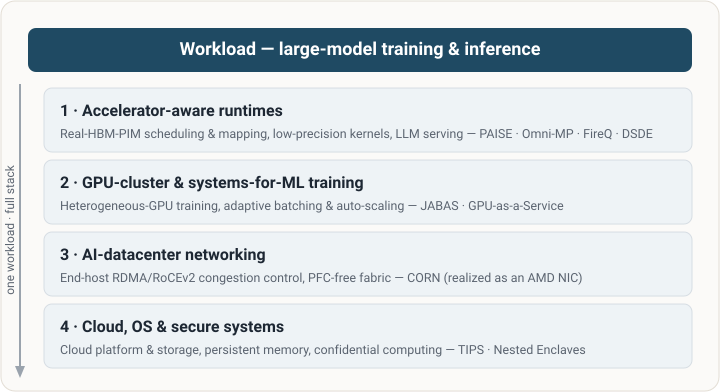
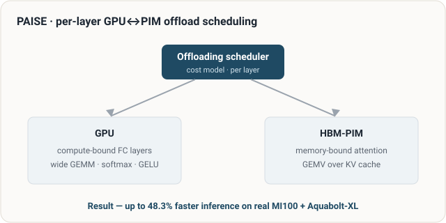
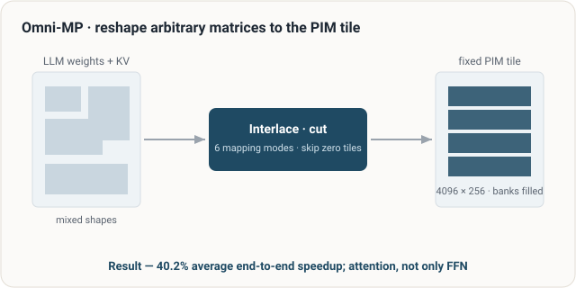
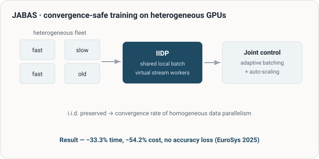
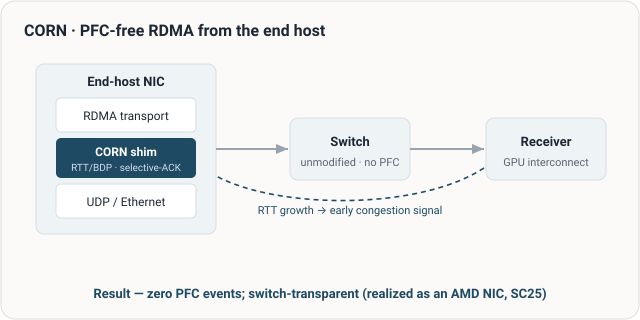

1 · Accelerator-aware inference & runtimes
Real-hardware processing-in-memory scheduling and matrix mapping, low-precision kernels, and LLM serving.
PAISE · Omni-MP · FireQ · DSDE
AI Systems & Accelerated Computing
Full-Stack AI Infrastructure for Efficient and Scalable AI
I build the computing systems that make large-scale AI practical and efficient — spanning accelerator-aware inference runtimes, GPU-cluster training, AI-datacenter networking, and cloud and secure systems.
AI Systems Research at Samsung SDS · Ph.D., Georgia Tech
One workload — large-model training and inference — driven down the full stack, from accelerator runtime to cluster, network, and a secure cloud foundation.
Real-hardware processing-in-memory scheduling and matrix mapping, low-precision kernels, and LLM serving.
PAISE · Omni-MP · FireQ · DSDE
Convergence-safe, efficient training across heterogeneous GPU fleets; GPU-as-a-Service.
JABAS · x.Cloud
End-host RDMA/RoCEv2 congestion control for GPU interconnect at fabric scale.
CORN (AMD hardware-NIC prototype)
Cloud platforms and storage, persistent memory, and confidential computing for secure AI execution.
Samsung Cloud Platform · TIPS · Nested Enclaves

Problem. Decoder-only LLM inference is memory-bound: attention re-reads a growing KV cache and stalls the GPU on HBM bandwidth.
Contribution. A per-layer GPU-vs-PIM offloading scheduler with data-layout adjustment and an interleaved-batched GEMM kernel on real HBM-PIM — up to 48.3% faster than GPU-only.
Role. Senior (last) author; set the direction and the offloading-scheduling algorithm and cost model.

Problem. Real PIM accepts only fixed matrix tiles, so prior PIM-for-LLM work accelerated only feed-forward layers, not attention.
Contribution. Generalized batched PIM-GEMV mapping (interlacing/cutting), zero-tile skipping, and PIM-aware KV concatenation — 40.2% average end-to-end speedup on real hardware.
Role. Senior co-author and real-PIM program lead; set the generalization goal.

Problem. Training on heterogeneous GPU clusters wastes resources, and the usual remedy breaks the i.i.d. assumption and hurts convergence.
Contribution. IIDP preserves convergence via virtual stream workers while batching and GPU allocation are tuned jointly — −33.3% time, −54.2% cost, no accuracy loss.
Role. Industry co-author (collaboration with UNIST); supplied the production heterogeneous-GPU problem and real-cluster validation context — did not lead the algorithm design.

Problem. RoCEv2 leans on switch-level PFC, which causes head-of-line blocking and PFC storms at the scale of AI GPU fabrics.
Contribution. End-host, RTT/BDP-driven congestion control with selective-ACK recovery makes RDMA run PFC-free and switch-transparent — zero PFC events in evaluation.
Role. Senior (last) author; set the cloud-RDMA direction and the RTT-based congestion-detection idea. Implemented as a hardware-NIC prototype in collaboration with AMD and demonstrated at SC25.

Problem. A fixed speculation length in speculative decoding wastes compute and creates batch stragglers under diverse serving load.
Contribution. A training-free, KLD-variance-driven per-sequence speculation length with an adaptive cap, implemented in vLLM — robust in low-acceptance-rate regimes.
Role. Senior co-author and research lead; drove the adaptive speculation-length cap and the vLLM integration.
Full list: Google Scholar · DBLP
In AI Systems Research at Samsung SDS, set a full-stack AI-infrastructure research agenda — GPU-as-a-Service / x.Cloud, PIM-accelerated inference, and AI-datacenter networking — and built a publishing systems-research program (HPCA, IEEE BigData, MCCSys@ICS). Earlier, conducted GPU-accelerated networking and 5G vRAN research at AT&T Labs Research.
Research collaborations: UC Berkeley Sky Computing Lab — represented and led Samsung SDS's participation as a founding sponsor · UNIST · KAIST · AMD · Intel · Ultra Ethernet Consortium.
Minsung Jang is a systems researcher whose work spans the full AI-infrastructure stack. He conducts AI systems research at Samsung SDS and currently serves as an Executive Advisor. He was previously at AT&T Labs Research, and earned his Ph.D. in Computer Science at the Georgia Institute of Technology (advisor: Prof. Karsten Schwan), with earlier degrees from Yonsei University.
Contact: mdpe36kr@gmail.com